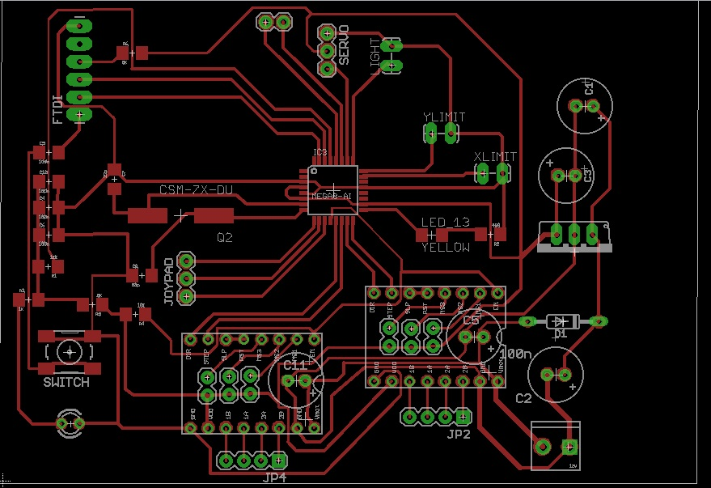

Electronics
The First concept was:
to use GRBL as interpreter
Main stage with 2 motor driver and servo/solenoid as Z axis
The concept is that the main stage will be able to make the 3rd 4th etc. axis board using a brushless motor or a PCB pen as a tool.


and this is the board made with Trotec flexx, I tried also to add a "silk" on the board
PIN OUT
The pinouts are:
STEP X 10
DIR X 9
STEP Y 12
DIR Y 11
LIMIT X A0
LIMIT Y A1
SERVO A3
JOYPAD ANALOG PIN A4 - A5
JOYPAD DIGITAL PIN 5 - 6 - 7
I2C PIN A4 - A5
AUX PIN A2
I added some pin more as Joypad as is possible to use the machine stand alone for example with a pen as toy plotter.
the AUX pin will be used for example to power up led light or a fan in case I want to use a laser diode as a tool.